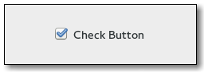

Gtk.CheckButton
Example
| Subclasses: | Gtk.RadioButton |
|---|
Methods
| Inherited: | Gtk.ToggleButton (10), Gtk.Button (29), Gtk.Bin (1), Gtk.Container (27), Gtk.Widget (256), GObject.Object (33), Gtk.Buildable (10), Gtk.Actionable (5), Gtk.Activatable (6) |
|---|
| static | new() |
| static | new_with_label(label) |
| static | new_with_mnemonic(label) |
Virtual Methods
| Inherited: | Gtk.ToggleButton (1), Gtk.Button (6), Gtk.Container (10), Gtk.Widget (82), GObject.Object (7), Gtk.Buildable (10), Gtk.Actionable (4), Gtk.Activatable (2) |
|---|
| do_draw_indicator(cr) |
Properties
| Inherited: | Gtk.ToggleButton (3), Gtk.Button (10), Gtk.Container (3), Gtk.Widget (38), Gtk.Actionable (2), Gtk.Activatable (2) |
|---|
Style Properties
| Inherited: | Gtk.Button (7), Gtk.Widget (17) |
|---|
| Name | Type | Default | Flags | Short Description |
|---|---|---|---|---|
| indicator-size | int | 16 | r | Size of check or radio indicator |
| indicator-spacing | int | 2 | r | Spacing around check or radio indicator |
Signals
| Inherited: | Gtk.ToggleButton (1), Gtk.Button (6), Gtk.Container (4), Gtk.Widget (69), GObject.Object (1) |
|---|
Fields
| Inherited: | Gtk.ToggleButton (1), Gtk.Button (1), Gtk.Bin (1), Gtk.Container (1), Gtk.Widget (1), GObject.InitiallyUnowned (3), GObject.Object (3) |
|---|
| Name | Type | Access | Description |
|---|---|---|---|
| toggle_button | Gtk.ToggleButton | r |
Class Details
- class Gtk.CheckButton(label=None, stock=None, use_stock=False, use_underline=False, **kwds)
Bases: Gtk.ToggleButton
A Gtk.CheckButton places a discrete Gtk.ToggleButton next to a widget, (usually a Gtk.Label ). See the section on Gtk.ToggleButton widgets for more information about toggle/check buttons.
The important signal ( Gtk.ToggleButton ::toggled ) is also inherited from Gtk.ToggleButton.
- static new()
Returns: a Gtk.Widget. Return type: Gtk.Widget Creates a new Gtk.CheckButton.
- static new_with_label(label)
Parameters: label (str) – the text for the check button. Returns: a Gtk.Widget. Return type: Gtk.Widget Creates a new Gtk.CheckButton with a Gtk.Label to the right of it.
- static new_with_mnemonic(label)
Parameters: label (str) – The text of the button, with an underscore in front of the mnemonic character Returns: a new Gtk.CheckButton Return type: Gtk.Widget Creates a new Gtk.CheckButton containing a label. The label will be created using Gtk.Label.new_with_mnemonic (), so underscores in label indicate the mnemonic for the check button.
- do_draw_indicator(cr)
Type: virtual Parameters: cr (cairo.Context) –